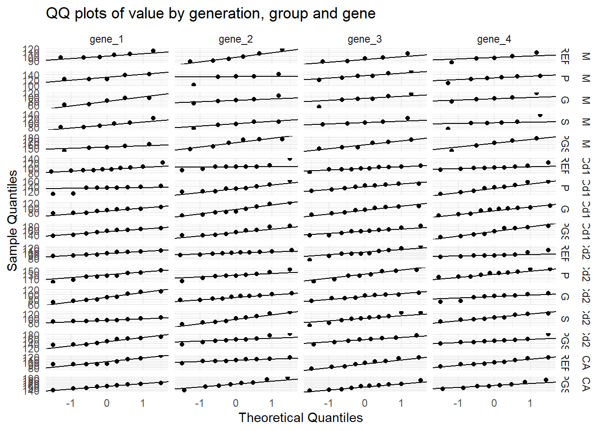
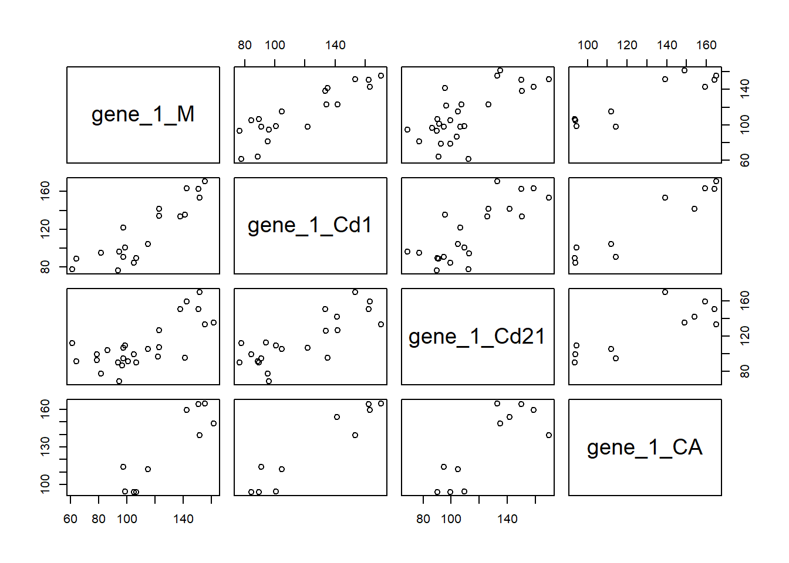
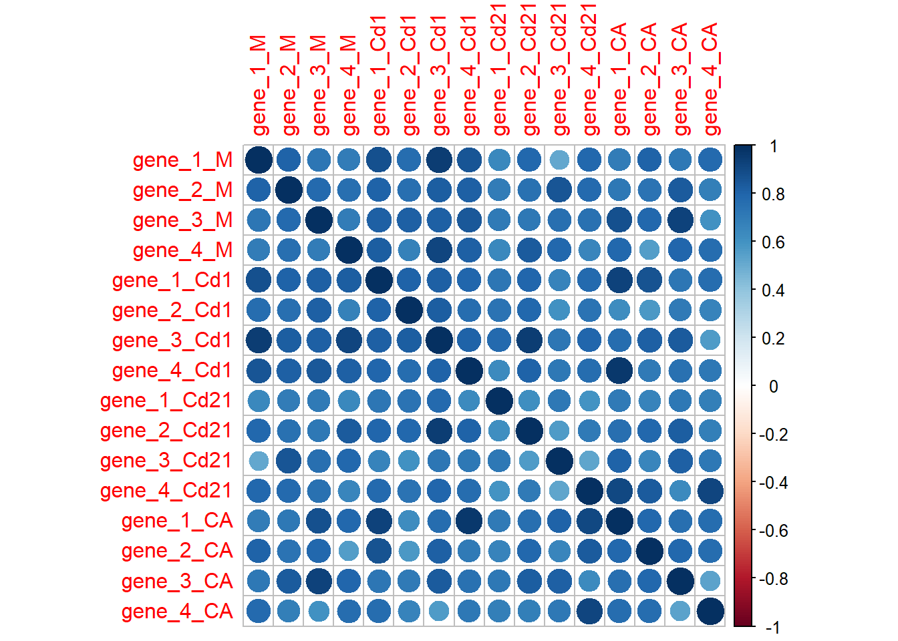
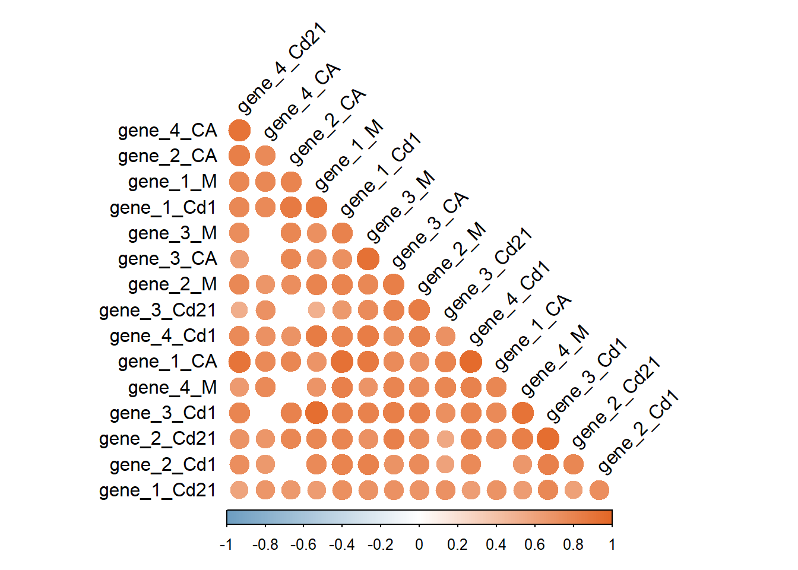

library(tidyverse)
library(here)
library(readxl)
library(janitor)
library(skimr)
library(broom)
library(rstatix)
raw_data <- read_excel(here("Basic", "data", "PCR.xlsx"), sheet = "relative")
data <- raw_data %>%
mutate(across(c(group, sex, rat, generation), as.factor))
longdata <- data %>%
pivot_longer(cols="gene_1":"gene_4", names_to="gene", values_to = "value" ) %>%
mutate(
group = factor(group,
levels = c("REF", "P", "G", "S", "PGS")),
generation = factor(generation,
levels = c( "M", "Cd1", "Cd21", "CA")),
gene = factor(gene,
levels = c("gene_1", "gene_2", "gene_3", "gene_4")),
sex = factor(sex,
levels = c("F", "M"))
)Estadística
Estadística descriptiva
Les dades amb les que treballarem, segurament ja ho heu fet.
La majoria de l’estadística descriptiva ja la mirem amb l’excel, però per comprovar que tot ho estem fent igual, podem demanar una taula amb la mitjana, la sd, l’error, la n i els límits.
total_results <- longdata %>% #longdata!,wide data també es podria, no recomano
group_by(generation, group, gene) %>% #que ho faci tot dins de la mateixa generació i mateix grup i per cada gen
summarise(
across(
where(is.numeric),
list(
n = ~sum(!is.na(.x)),
mean = ~mean(.x, na.rm = TRUE),
sd = ~sd(.x, na.rm = TRUE),
error = ~sd(.x, na.rm = TRUE) / sqrt(sum(!is.na(.x))),
upper = ~mean(.x, na.rm = TRUE) + 2 * sd(.x, na.rm = TRUE),
lower = ~mean(.x, na.rm = TRUE) - 2 * sd(.x, na.rm = TRUE)
),
.names = "{.col}_{.fn}"
)) %>%
as.data.frame() #ensenyar-ho com a dataframe`summarise()` has grouped output by 'generation', 'group'. You can override
using the `.groups` argument.View(total_results)
head(total_results) generation group gene value_n value_mean value_sd value_error value_upper
1 M REF gene_1 6 103.45000 6.919754 2.824978 117.2895
2 M REF gene_2 6 99.63333 11.881863 4.850750 123.3971
3 M REF gene_3 5 95.66000 8.143893 3.642060 111.9478
4 M REF gene_4 5 97.78000 8.799261 3.935149 115.3785
5 M P gene_1 5 129.72000 9.279925 4.150108 148.2798
6 M P gene_2 5 128.08000 15.767910 7.051624 159.6158
value_lower
1 89.61049
2 75.86961
3 79.37221
4 80.18148
5 111.16015
6 96.54418Al tenir activat na.rm=TRUE s’eliminen els NA del que estàs calculant.
Inferència estadística
Per a saber millor el perquè i què fa cada test, recomano consultar el llibre https://learningstatisticswithr.com/book/. Si ho voleu com algo rutinari, aquí teniu la taula del protocol que va fer la Mariona Camps al 2016 per al SPSS.
| Nº grups | Factors fixos (variables independents) | Segueix la normalitat? | Segueix la homogeneitat de variàncies? | Son dades aparellades? | Test |
|---|---|---|---|---|---|
| 2 | 1 | Si | Si/No | Si/No | T-test |
| No | No | Si | Wilcoxon | ||
| No | U Mann Whitney | ||||
| 1 (mesures repetides) | 1 | No | No | Si | Friedman |
| >2 | 1 | Si | Si | Anova one-way (Posthoc -Bonferroni) | |
| No | Anova one-way (Posthoc -Dunnet T3 (SPSS); Games-Howell (R) | ||||
| No | No | Kruskal Wallis (Posthoc Dunn -Bonferroni correction) | |||
| 2 | Si | Si | Si | Anova two-way mesures repetides | |
| No | No | Si | ? | ||
| Si | Si | No | Anova two-way | ||
| No | No | No | Art ANOVA |
Sigui com sigui sempre hem de començar mirant la normalitat i homogenitat de variàncies de les dades.
Abans de començar a fer gràfics canviarem el “default theme” a classic.
theme_set(theme_classic())També, al demanar-li View(), el separador decimal és en punt, però jo sempre treballo amb l’excel amb comes, per tant per poder-ho copiar directament:
copy <- results_test%>%
mutate(across(where(is.numeric), ~ ifelse(
is.na(.),
"",
format(., decimal.mark = ",", scientific = FALSE))))
View(copy)A vegades no funciona, potser és més còmode crear un excel amb el nom “copy” i enganxar-ho directament.
library(writexl)
write_xlsx(results, here("pre-carpeta", "data", "copy.xlsx"))Normalitat
En el cas que la el número de grups diferents sigui de n<50 s’ha de fer Shapiro-Wilk. En el cas que la n>50, Kolmogorov-Smirnov, el qual no explicaré ja que no l’hem de fer pràcticament mai.
Per a la normalitat primer es comprova amb un QQplot, de manera visual
QQplot <- longdata %>%
group_by(generation, group, gene) %>% #com separaras a l'anàlisi posterior
ggplot(aes(sample = value)) +
stat_qq() +
stat_qq_line() +
facet_grid(generation + group ~ gene, scales = "free") +
theme_minimal() +
labs(title = "QQ plots of value by generation, group and gene",
y = "Sample Quantiles",
x = "Theoretical Quantiles")
QQplot
En el cas de voler només una generació canviar el group_by(generation) per filter(generation == "CA").
Com que no som experts en estadística, nosaltres també farem el test de Shapiro-Wilk per a que ens digui si són normals (p>0.05) o no són normals (p<0.05)
shapiro_by_group <- longdata %>%
group_by(generation, group, gene) %>%
summarise(
# SPSS-style df = size of the sample used
df = sum(!is.na(value)),
# Shapiro–Wilk test (only runs if df ≥ 3, same as SPSS)
W = if(df >= 3) shapiro.test(value)$statistic else NA_real_,
p_value = if(df >= 3) shapiro.test(value)$p.value else NA_real_,
.groups = "drop"
)%>%
mutate( #per afegir columna de * significació, es pot treure
signif = case_when(
is.na(p_value) ~ "ns",
p_value < 0.001 ~ "***",
p_value < 0.01 ~ "**",
p_value < 0.05 ~ "*",
p_value < 0.1 ~ "·",
TRUE ~ "ns"
)) # A R la significació es veu més neta
shapiro_by_group# A tibble: 64 × 7
generation group gene df W p_value signif
<fct> <fct> <fct> <int> <dbl> <dbl> <chr>
1 M REF gene_1 6 0.853 0.165 ns
2 M REF gene_2 6 0.924 0.534 ns
3 M REF gene_3 5 0.915 0.498 ns
4 M REF gene_4 5 0.970 0.876 ns
5 M P gene_1 5 0.738 0.0228 *
6 M P gene_2 5 0.735 0.0215 *
7 M P gene_3 6 0.978 0.941 ns
8 M P gene_4 6 0.856 0.175 ns
9 M G gene_1 5 0.858 0.222 ns
10 M G gene_2 5 0.970 0.876 ns
# ℹ 54 more rows- En aquest cas el gen_1 i gen_2 en alguns grups i algunes generacions no segueixen la normalitat, llavors en el nostre cas decidiriem que aplicariem tests de no normal en tots els casos, però es podria discutir a veure quin aplicar.
Si ho esteu comprovant amb els valors de SPSS, sobretot que sigui amb la opció de “exclude cases pairwise”. Amb la opció per defecte no ho fa correctament.
Homogeneïtat de les variàncies
Test Levene per a que ens digui si les variàncies són homogènies (p>0.05) o no són homogènies (p<0.05). Es fa per tots els grups en general, no cal separar grups. En el cas de SPSS es feia amb l’Anova, a R el codi seria:
library(car)
levene_long <- longdata %>%
group_by(generation, gene) %>%
group_modify(~ {
# eliminem NA
d <- .x[!is.na(.x$value) & !is.na(.x$group), ]
# --- Levene clàssics ---
lev_mean <- leveneTest(value ~ group, d, center = mean)
lev_median <- leveneTest(value ~ group, d, center = median)
tibble(
method = c("Based on Mean","Based on Median"),
F = c(lev_mean[1, "F value"],lev_median[1, "F value"]),
df1 = c(lev_mean[1, "Df"],lev_median[1, "Df"] ),
df2 = c(lev_mean[2, "Df"],lev_median[2, "Df"]),
p.value = c(lev_mean[1, "Pr(>F)"],lev_median[1, "Pr(>F)"]))
}) %>%
ungroup() %>%
mutate( #per afegir columna de * significació, es pot treure
signif = case_when(
is.na(p.value) ~ "ns",
p.value < 0.001 ~ "***",
p.value < 0.01 ~ "**",
p.value < 0.05 ~ "*",
p.value < 0.1 ~ "·",
TRUE ~ "ns"
)) # A R la significació es veu més neta
levene_long# A tibble: 32 × 8
generation gene method F df1 df2 p.value signif
<fct> <fct> <chr> <dbl> <int> <int> <dbl> <chr>
1 M gene_1 Based on Mean 2.54 4 22 0.0686 ·
2 M gene_1 Based on Median 1.52 4 22 0.232 ns
3 M gene_2 Based on Mean 0.0455 4 22 0.996 ns
4 M gene_2 Based on Median 0.0161 4 22 0.999 ns
5 M gene_3 Based on Mean 0.638 4 23 0.641 ns
6 M gene_3 Based on Median 0.576 4 23 0.683 ns
7 M gene_4 Based on Mean 0.395 4 22 0.810 ns
8 M gene_4 Based on Median 0.330 4 22 0.855 ns
9 Cd1 gene_1 Based on Mean 0.235 3 33 0.871 ns
10 Cd1 gene_1 Based on Median 0.207 3 33 0.891 ns
# ℹ 22 more rows- En aquest cas el gen_1 i gen_2 en alguns grups i algunes generacions les variàncies no son homogenies, llavors en el nostre cas decidiriem que aplicariem tests de no homogènies en tots els casos, però es podria discutir a veure quin aplicar.
Aquí també tenim una diferència respecte a SPSS, ja que levene no permet NA, llavors en el format wide elimina tota la observació. Al treballar en long només eliminem la observació del gen concret per tant mantenim més dades per als altres gens. Si es vol comprovar o fer, previ al test LEVENE fer:
longdata2 <- data %>%
na.omit() %>%
pivot_longer(cols="gene_1":"gene_4", names_to="gene", values_to = "value" ) %>%
mutate(
group = factor(group,
levels = c("REF", "P", "G", "S", "PGS")),
generation = factor(generation,
levels = c( "M", "Cd1", "Cd21", "CA")),
gene = factor(gene,
levels = c("gene_1", "gene_2", "gene_3", "gene_4")))A part SPSS ho feia centrat en la mitjana, mediana (amb R ho fem) i “trimmed mean” i “median and with adjusted df”. Aquestes últimes no les calculem, però no ho crec necessari ja que normalment els resultats son o tots no significatius o tots significatius.
Independent samples T-test
Per a comparacions de mitjanes on hi ha dos grups i les mostres son normals: T-test de mostres independents
results_ttest <- longdata %>%
filter(generation == "CA") %>% #només aquesta té dos grups
group_by(generation, gene) %>%
summarise(
# fer t-test i guardar el resultat
t_res = list(t.test(value ~ group, var.equal = T, alternative = "two.sided", conf.level=0.95)), #canviar a F si equal variances not assumed ; paired = F, es separen les variables amb ,
.groups = "drop"
) %>%
rowwise() %>%
mutate(
t = t_res$statistic,
df = t_res$parameter,
mean_diff = diff(t_res$estimate), # Mean difference (group1 - group2)
std_error = abs(mean_diff) / abs(t), # Std. Error Difference
p_one_sided = t_res$p.value / 2,
p_two_sided = t_res$p.value,
sig = case_when(
is.na(t_res$p.value) ~ "ns",
t_res$p.value < 0.001 ~ "***",
t_res$p.value < 0.01 ~ "**",
t_res$p.value < 0.05 ~ "*",
t_res$p.value < 0.1 ~ "·",
TRUE ~ "ns"), #no cal, per visualitzar-ho millor
conf_low = t_res$conf.int[1],
conf_high = t_res$conf.int[2]
) %>%
select(generation, gene, t, df, p_one_sided, p_two_sided, sig, mean_diff, std_error, conf_low, conf_high)
results_ttest# A tibble: 4 × 11
# Rowwise:
generation gene t df p_one_sided p_two_sided sig mean_diff
<fct> <fct> <dbl> <dbl> <dbl> <dbl> <chr> <dbl>
1 CA gene_1 -10.7 16 0.00000000566 0.0000000113 *** 53.6
2 CA gene_2 -9.83 15 0.0000000312 0.0000000624 *** 58.3
3 CA gene_3 -9.17 17 0.0000000270 0.0000000540 *** 57.4
4 CA gene_4 -10.8 15 0.00000000906 0.0000000181 *** 59.9
# ℹ 3 more variables: std_error <dbl>, conf_low <dbl>, conf_high <dbl>En el cas que la homogeneïtat de variàncies no es compleixi, modificar
var.equal = F.En el cas de dades aparellades afegir
paired = Ti eliminarvar.equalEn el cas que tenir vectors canvia la formula
t.test(value, group). No acostuma a ser el nostre cas, vigilar!!
One-way ANOVA
Quan tenim més de dos grups i les dades són normals i homogènies fem el One-way ANOVA, amb el post-hoc ajustat per Bonferroni.
Aquest codi només mostra el resultat
longdata %>%
filter(generation %in% c("M", "Cd1", "Cd21")) %>%
mutate(gene_name = gene) %>%
group_by(gene) %>%
group_walk(~ {
cat("\n====================\n")
cat("GENE:", unique(.x$gene_name), "\n")
cat("Generation:", unique(.x$generation), "\n")
print(summary(aov(value ~ group, data = .x)))
})
====================
GENE: 1
Generation: 1 2 3
Df Sum Sq Mean Sq F value Pr(>F)
group 4 67709 16927 120.8 <2e-16 ***
Residuals 104 14572 140
---
Signif. codes: 0 '***' 0.001 '**' 0.01 '*' 0.05 '.' 0.1 ' ' 1
11 observations deleted due to missingness
====================
GENE: 2
Generation: 1 2 3
Df Sum Sq Mean Sq F value Pr(>F)
group 4 74249 18562 93.29 <2e-16 ***
Residuals 105 20892 199
---
Signif. codes: 0 '***' 0.001 '**' 0.01 '*' 0.05 '.' 0.1 ' ' 1
10 observations deleted due to missingness
====================
GENE: 3
Generation: 1 2 3
Df Sum Sq Mean Sq F value Pr(>F)
group 4 75457 18864 106.1 <2e-16 ***
Residuals 106 18840 178
---
Signif. codes: 0 '***' 0.001 '**' 0.01 '*' 0.05 '.' 0.1 ' ' 1
9 observations deleted due to missingness
====================
GENE: 4
Generation: 1 2 3
Df Sum Sq Mean Sq F value Pr(>F)
group 4 69539 17385 95.81 <2e-16 ***
Residuals 105 19052 181
---
Signif. codes: 0 '***' 0.001 '**' 0.01 '*' 0.05 '.' 0.1 ' ' 1
10 observations deleted due to missingnessAquest altre crea una taula per copiar a l’excel
library(rstatix)
results_anova <- longdata %>%
filter(generation %in% c("M", "Cd1", "Cd21")) %>% #seleccionar aquelles que sigui el test correcte
group_by(generation, gene) %>%
group_map(~ {
model <- aov(value ~ group, data = .x)
# taula tidy del model
tidy_model <- tidy(model)%>%
mutate(gene = .y$gene) %>%
mutate(generation = .y$generation)
# fila TOTAL
total_row <- tibble(
term = "Total",
df = sum(tidy_model$df, na.rm = TRUE),
sumsq = sum(tidy_model$sumsq, na.rm = TRUE),
meansq = NA_real_,
statistic = NA_real_,
p.value = NA_real_,
gene = .y$gene
)
bind_rows(tidy_model, total_row)
}) %>%
bind_rows() %>%
select(generation, gene, everything()) %>%
mutate(
signif = case_when(
is.na(p.value) ~ "ns",
p.value < 0.001 ~ "***",
p.value < 0.01 ~ "**",
p.value < 0.05 ~ "*",
p.value < 0.1 ~ "·",
TRUE ~ "ns"))
results_anova# A tibble: 36 × 9
generation gene term df sumsq meansq statistic p.value signif
<fct> <fct> <chr> <dbl> <dbl> <dbl> <dbl> <dbl> <chr>
1 M gene_1 group 4 17584. 4396. 30.8 1.01e-8 ***
2 M gene_1 Residuals 22 3144. 143. NA NA ns
3 <NA> gene_1 Total 26 20728. NA NA NA ns
4 M gene_2 group 4 24297. 6074. 34.8 3.23e-9 ***
5 M gene_2 Residuals 22 3843. 175. NA NA ns
6 <NA> gene_2 Total 26 28140. NA NA NA ns
7 M gene_3 group 4 21158. 5290. 28.5 1.29e-8 ***
8 M gene_3 Residuals 23 4266. 185. NA NA ns
9 <NA> gene_3 Total 27 25425. NA NA NA ns
10 M gene_4 group 4 16595. 4149. 20.0 4.52e-7 ***
# ℹ 26 more rowsSi fem cada gen per separat el codi és molt més senzill, però tenim més feina manual
dades_anova <- longdata %>%
filter(generation == "M", gene == "gene_1")
anova <- aov(value ~ group,dades_anova)
class(anova)[1] "aov" "lm" summary(anova) Df Sum Sq Mean Sq F value Pr(>F)
group 4 17584 4396 30.76 1.01e-08 ***
Residuals 22 3144 143
---
Signif. codes: 0 '***' 0.001 '**' 0.01 '*' 0.05 '.' 0.1 ' ' 1
3 observations deleted due to missingnessPost-hoc ajustat per Bonferroni
En el cas que doni diferències significatives, passem a fer el post-hoc.
- Al fer emmeans: Aquest codi agafa cada model ANOVA, calcula les mitjanes ajustades, fa totes les comparacions parell a parell amb Bonferroni, i retorna estimacions + intervals de confiança + p-valors.
library(emmeans)Welcome to emmeans.
Caution: You lose important information if you filter this package's results.
See '? untidy'posthoc_results <- longdata %>%
filter(generation %in% c("M", "Cd1", "Cd21")) %>%
group_by(generation, gene) %>%
nest() %>%
mutate(
aov_model = map(data, ~ aov(value ~ group, data = .x)),
posthoc = map(
aov_model,
~ emmeans(.x, ~ group) %>%
contrast("pairwise", adjust = "bonferroni") %>%
summary(level = 0.95,infer = c(TRUE, TRUE)) %>% # IC + p-value
as.data.frame())) %>%
select(generation, gene, posthoc) %>%
unnest(posthoc) %>%
mutate(
signif = case_when(
is.na(p.value) ~ "ns",
p.value < 0.001 ~ "***",
p.value < 0.01 ~ "**",
p.value < 0.05 ~ "*",
p.value < 0.1 ~ "·",
TRUE ~ "ns"))
posthoc_results# A tibble: 104 × 11
# Groups: generation, gene [12]
generation gene contrast estimate SE df lower.CL upper.CL t.ratio
<fct> <fct> <chr> <dbl> <dbl> <dbl> <dbl> <dbl> <dbl>
1 M gene_1 REF - P -26.3 7.24 22 -48.8 -3.69 -3.63
2 M gene_1 REF - G 24.4 7.24 22 1.81 47.0 3.37
3 M gene_1 REF - S 9.55 6.90 22 -12.0 31.1 1.38
4 M gene_1 REF - PGS -49.1 7.24 22 -71.7 -26.5 -6.78
5 M gene_1 P - G 50.7 7.56 22 27.1 74.2 6.70
6 M gene_1 P - S 35.8 7.24 22 13.2 58.4 4.95
7 M gene_1 P - PGS -22.8 7.56 22 -46.4 0.741 -3.02
8 M gene_1 G - S -14.8 7.24 22 -37.4 7.74 -2.05
9 M gene_1 G - PGS -73.5 7.56 22 -97.1 -49.9 -9.72
10 M gene_1 S - PGS -58.7 7.24 22 -81.2 -36.1 -8.10
# ℹ 94 more rows
# ℹ 2 more variables: p.value <dbl>, signif <chr>Si ho fèssim per cada gen alhora ho podriem fer amb aquestes fòrmules:
pairwise.t.test( x = dades_anova$value, # outcome variable
g = dades_anova$group_name, # grouping variable
p.adjust.method = "none" # which correction to use?
)
#o
library(lsr)
posthocPairwiseT( x = results_anova, p.adjust.method = "bonferroni" )Post-hoc Games-Howell
En el cas de dades normals però no homogènies, amb l’SPSS faríem Dunnet T3. En R no existeix així que es fa el Games-Howell.
library(rstatix)
posthoc_gameshowell <- longdata %>%
filter(generation == "M") %>%
group_by(gene) %>%
games_howell_test(value ~ group)
posthoc_gameshowell# A tibble: 40 × 9
gene .y. group1 group2 estimate conf.low conf.high p.adj p.adj.signif
* <fct> <chr> <chr> <chr> <dbl> <dbl> <dbl> <dbl> <chr>
1 gene_1 value REF P 26.3 8.52 44.0 0.007 **
2 gene_1 value REF G -24.4 -54.3 5.55 0.105 ns
3 gene_1 value REF S -9.55 -36.1 17.0 0.697 ns
4 gene_1 value REF PGS 49.1 34.9 63.4 0.0000101 ****
5 gene_1 value P G -50.7 -80.7 -20.6 0.004 **
6 gene_1 value P S -35.8 -63.1 -8.50 0.012 *
7 gene_1 value P PGS 22.8 4.58 41.1 0.017 *
8 gene_1 value G S 14.8 -18.2 47.9 0.578 ns
9 gene_1 value G PGS 73.5 43.6 103. 0.000744 ***
10 gene_1 value S PGS 58.7 32.0 85.3 0.00066 ***
# ℹ 30 more rowsU-Mann Whitney
Quan tenim dos grups i les dades no són ni normals ni homogènies fem el test de U-Mann Whitney.
results_umw <- longdata %>%
filter(generation == "CA") %>%
group_by(gene) %>%
wilcox_test(value ~ group) #el que dona R per defecte
results_umw# A tibble: 4 × 8
gene .y. group1 group2 n1 n2 statistic p
* <fct> <chr> <chr> <chr> <int> <int> <dbl> <dbl>
1 gene_1 value REF PGS 9 9 0 0.000409
2 gene_2 value REF PGS 9 8 0 0.0000823
3 gene_3 value REF PGS 9 10 0 0.0000217
4 gene_4 value REF PGS 9 8 0 0.000631 Kruskall-Wallis
Quan tenim més de dos grups i les dades no són ni normals ni homogènies fem el test de Kruskall-Wallis.
Només l’imprimeix
longdata %>%
filter(generation == "M") %>%
mutate(gene_name = gene) %>%
group_by(gene) %>%
group_walk(~ {
cat("\n====================\n")
cat("GENE:", unique(.x$gene_name), "\n")
print(kruskal.test(value ~ group, data = .x))
})
====================
GENE: 1
Kruskal-Wallis rank sum test
data: value by group
Kruskal-Wallis chi-squared = 22.311, df = 4, p-value = 0.0001738
====================
GENE: 2
Kruskal-Wallis rank sum test
data: value by group
Kruskal-Wallis chi-squared = 19.741, df = 4, p-value = 0.0005618
====================
GENE: 3
Kruskal-Wallis rank sum test
data: value by group
Kruskal-Wallis chi-squared = 21.543, df = 4, p-value = 0.0002471
====================
GENE: 4
Kruskal-Wallis rank sum test
data: value by group
Kruskal-Wallis chi-squared = 18.413, df = 4, p-value = 0.001025Per a copiar-lo a l’excel.
results_kruskal <- longdata %>%
filter(generation %in% c("M", "Cd1", "Cd21")) %>%
group_by(generation, gene) %>%
group_map(~ {
# Kruskal–Wallis test
model <- kruskal.test(value ~ group, data = .x)
# tidy del test
tidy_model <- tidy(model) %>%
mutate(
generation = .y$generation,
gene = .y$gene,
df = parameter
) %>%
select(generation, gene,df,statistic,p.value)
}) %>%
bind_rows() %>%
mutate(
signif = case_when(
is.na(p.value) ~ "ns",
p.value < 0.001 ~ "***",
p.value < 0.01 ~ "**",
p.value < 0.05 ~ "*",
p.value < 0.1 ~ "·",
TRUE ~ "ns"))
results_kruskal# A tibble: 12 × 6
generation gene df statistic p.value signif
<fct> <fct> <int> <dbl> <dbl> <chr>
1 M gene_1 4 22.3 0.000174 ***
2 M gene_2 4 19.7 0.000562 ***
3 M gene_3 4 21.5 0.000247 ***
4 M gene_4 4 18.4 0.00102 **
5 Cd1 gene_1 3 29.9 0.00000145 ***
6 Cd1 gene_2 3 26.0 0.00000967 ***
7 Cd1 gene_3 3 30.0 0.00000136 ***
8 Cd1 gene_4 3 28.8 0.00000242 ***
9 Cd21 gene_1 4 31.2 0.00000284 ***
10 Cd21 gene_2 4 32.6 0.00000143 ***
11 Cd21 gene_3 4 27.1 0.0000186 ***
12 Cd21 gene_4 4 35.2 0.000000430 *** Si son significatius, fem el post-hoc Dunn.
Post-hoc Dunn amb correcció de Bonferroni
Quan les dades no siguin ni normals ni homogènies, es fa el test post-hoc de Dunn amb la correcció de Bonferroni.
posthoc_dunn <- longdata %>%
filter(generation == "M") %>%
group_by(gene) %>%
dunn_test(
value ~ group,
p.adjust.method = "bonferroni")
posthoc_dunn# A tibble: 40 × 10
gene .y. group1 group2 n1 n2 statistic p p.adj p.adj.signif
* <fct> <chr> <chr> <chr> <int> <int> <dbl> <dbl> <dbl> <chr>
1 gene_1 value REF P 6 5 1.46 1.45e-1 1 e+0 ns
2 gene_1 value REF G 6 5 -1.75 8.03e-2 8.03e-1 ns
3 gene_1 value REF S 6 6 -0.946 3.44e-1 1 e+0 ns
4 gene_1 value REF PGS 6 5 2.50 1.25e-2 1.25e-1 ns
5 gene_1 value P G 5 5 -3.07 2.14e-3 2.14e-2 *
6 gene_1 value P S 5 6 -2.36 1.83e-2 1.83e-1 ns
7 gene_1 value P PGS 5 5 0.997 3.19e-1 1 e+0 ns
8 gene_1 value G S 5 6 0.847 3.97e-1 1 e+0 ns
9 gene_1 value G PGS 5 5 4.07 4.76e-5 4.76e-4 ***
10 gene_1 value S PGS 6 5 3.40 6.72e-4 6.72e-3 **
# ℹ 30 more rowsTwo-way ANOVA
Quan tenim més de dos grups, i hi ha dues variables independents, per exemple sexe i grup. Les dades han de ser normals i homogènies. Es fa Two-way ANOVA. Aquest cas és molt interessant per veure si hi ha interacció entre el grup i sexe. Tots sabem que molts cops un efecte de grup es veu, però nomès en els mascles. Aquest seria el test adeqüat per comprovar-ho.
results_tw_anova <- longdata %>%
filter(generation %in% c("Cd1", "Cd21", "CA")) %>%
group_by(gene, generation) %>%
group_map(~ {
.x$group <- as.factor(.x$group)
.x$sex <- as.factor(.x$sex)
model <- aov(value ~ group * sex, data = .x)
tidy_model <- tidy(model) %>%
mutate(
generation = .y$generation,
gene = .y$gene
)
total_row <- tibble(
term = "Total",
df = sum(tidy_model$df, na.rm = TRUE),
sumsq = sum(tidy_model$sumsq, na.rm = TRUE),
meansq = NA_real_,
statistic = NA_real_,
p.value = NA_real_,
generation = .y$generation,
gene = .y$gene
)
bind_rows(tidy_model, total_row)
}) %>%
bind_rows() %>%
select(generation, gene, everything()) %>%
mutate(
signif = case_when(
is.na(p.value) ~ "ns",
p.value < 0.001 ~ "***",
p.value < 0.01 ~ "**",
p.value < 0.05 ~ "*",
p.value < 0.1 ~ "·",
TRUE ~ "ns"
)
)
results_tw_anova# A tibble: 60 × 9
generation gene term df sumsq meansq statistic p.value signif
<fct> <fct> <chr> <dbl> <dbl> <dbl> <dbl> <dbl> <chr>
1 Cd1 gene_1 group 3 26329. 8776. 71.5 1.65e-13 ***
2 Cd1 gene_1 sex 1 17.2 17.2 0.140 7.11e- 1 ns
3 Cd1 gene_1 group:sex 3 244. 81.3 0.662 5.82e- 1 ns
4 Cd1 gene_1 Residuals 29 3559. 123. NA NA ns
5 Cd1 gene_1 Total 36 30149. NA NA NA ns
6 Cd21 gene_1 group 4 23691. 5923. 34.9 9.03e-12 ***
7 Cd21 gene_1 sex 1 95.5 95.5 0.563 4.58e- 1 ns
8 Cd21 gene_1 group:sex 4 750. 187. 1.11 3.69e- 1 ns
9 Cd21 gene_1 Residuals 35 5934. 170. NA NA ns
10 Cd21 gene_1 Total 44 30470. NA NA NA ns
# ℹ 50 more rowsEl model actual és aov(value ~ group * sex, data = .x) , el signe de multiplicació indica que també vols veure la interacció (justament el que volem). Si no vulguèssim veure la interacció seria aov(value ~ group + sex, data = .x) .
Si el model ens indica que hi ha interacció, fem el post-hoc, ajustat per bonferroni.
posthoc_tw_results <- longdata %>%
filter(generation %in% c("CA", "Cd21", "Cd1")) %>%
group_by(generation, gene) %>%
nest() %>%
mutate(
aov_model = map(data, ~ aov(value ~ group * sex, data = .x)),
posthoc = map(
aov_model,
~ emmeans(.x, ~ group | sex) %>% #girar sex | group si vols veure les diferències entre sexe dins de cada grup
contrast("pairwise", adjust = "tukey") %>%
summary(level = 0.95,infer = c(TRUE, TRUE)) %>% # IC + p-value
as.data.frame())) %>%
select(generation, gene, posthoc) %>%
unnest(posthoc) %>%
mutate(
signif = case_when(
is.na(p.value) ~ "ns",
p.value < 0.001 ~ "***",
p.value < 0.01 ~ "**",
p.value < 0.05 ~ "*",
p.value < 0.1 ~ "·",
TRUE ~ "ns"))
posthoc_tw_results# A tibble: 136 × 12
# Groups: generation, gene [12]
generation gene contrast sex estimate SE df lower.CL upper.CL
<fct> <fct> <fct> <fct> <dbl> <dbl> <dbl> <dbl> <dbl>
1 Cd1 gene_1 REF - P F -40.2 7.43 29 -60.5 -20.0
2 Cd1 gene_1 REF - G F 7.50 7.01 29 -11.6 26.6
3 Cd1 gene_1 REF - PGS F -61.1 7.43 29 -81.3 -40.8
4 Cd1 gene_1 P - G F 47.7 7.43 29 27.5 68.0
5 Cd1 gene_1 P - PGS F -20.9 7.83 29 -42.2 0.467
6 Cd1 gene_1 G - PGS F -68.6 7.43 29 -88.8 -48.3
7 Cd1 gene_1 REF - P M -26.7 7.01 29 -45.7 -7.57
8 Cd1 gene_1 REF - G M 9.59 7.43 29 -10.7 29.8
9 Cd1 gene_1 REF - PGS M -55.8 7.01 29 -74.9 -36.7
10 Cd1 gene_1 P - G M 36.2 7.43 29 16.0 56.5
# ℹ 126 more rows
# ℹ 3 more variables: t.ratio <dbl>, p.value <dbl>, signif <chr>En aquest cas podem fer les comparacions múltiples dels diferents grups per cada sexe, com hem fet ara: emmeans(.x, ~ group | sex) . També ho podem fer al revés, dels diferents sexes a cada grup emmeans(.x, ~ sex | group).
posthoc_tw_results <- longdata %>%
filter(generation %in% c("CA", "Cd21", "Cd1")) %>%
group_by(generation, gene) %>%
nest() %>%
mutate(
aov_model = map(data, ~ aov(value ~ group * sex, data = .x)),
posthoc = map(
aov_model,
~ emmeans(.x, ~ sex | group) %>% #canvi
contrast("pairwise", adjust = "bonferroni") %>%
summary(level = 0.95,infer = c(TRUE, TRUE)) %>% # IC + p-value
as.data.frame())) %>%
select(generation, gene, posthoc) %>%
unnest(posthoc) %>%
mutate(
signif = case_when(
is.na(p.value) ~ "ns",
p.value < 0.001 ~ "***",
p.value < 0.01 ~ "**",
p.value < 0.05 ~ "*",
p.value < 0.1 ~ "·",
TRUE ~ "ns"))
posthoc_tw_results# A tibble: 44 × 12
# Groups: generation, gene [12]
generation gene contrast group estimate SE df lower.CL upper.CL
<fct> <fct> <fct> <fct> <dbl> <dbl> <dbl> <dbl> <dbl>
1 Cd1 gene_1 F - M REF -6.44 7.01 29 -20.8 7.89
2 Cd1 gene_1 F - M P 7.11 7.43 29 -8.09 22.3
3 Cd1 gene_1 F - M G -4.35 7.43 29 -19.6 10.8
4 Cd1 gene_1 F - M PGS -1.16 7.43 29 -16.4 14.0
5 Cd1 gene_2 F - M REF -3.82 11.2 28 -26.8 19.1
6 Cd1 gene_2 F - M P -1.14 11.2 28 -24.1 21.8
7 Cd1 gene_2 F - M G -0.740 11.2 28 -23.7 22.2
8 Cd1 gene_2 F - M PGS 11.8 11.2 28 -11.1 34.7
9 Cd1 gene_3 F - M REF 3.54 6.52 30 -9.78 16.9
10 Cd1 gene_3 F - M P 11.7 6.92 30 -2.41 25.8
# ℹ 34 more rows
# ℹ 3 more variables: t.ratio <dbl>, p.value <dbl>, signif <chr>Si volem fer un post-hoc on hi siguin absolutament totes les comparacions
results_posthoc_tw_anova <- longdata %>%
drop_na() %>%
filter(generation %in% c("Cd21")) %>%
group_by(generation, gene) %>%
nest() %>%
# Ajust model clàssic
mutate(model = map(data, ~ aov(value ~ sex * group, data = .x))) %>%
mutate(
posthoc = map(model, function(m) {
res_list <- list()
# Funció auxiliar (mateixa que ART)
get_posthoc <- function(model, formula_emm, effect_name) {
emm <- emmeans(model, formula_emm)
raw <- pairs(emm, adjust = "none") %>% as.data.frame()
adj <- pairs(emm, adjust = "bonferroni") %>% as.data.frame()
raw$p.raw <- raw$p.value
raw$p.adj <- adj$p.value
raw$effect <- effect_name
raw
}
# 1️⃣ Interacció → simple effects
df_int1 <- get_posthoc(m, ~ group | sex, "sex:group")
res_list <- c(res_list, list(df_int1))
# 1️⃣ Interacció → simple effects
df_int2 <- get_posthoc(m, ~ sex | group, "group:sex")
res_list <- c(res_list, list(df_int2))
# 2️⃣ Sex (main effect)
df_sex <- get_posthoc(m, ~ sex, "sex")
res_list <- c(res_list, list(df_sex))
# 3️⃣ Group (main effect)
df_group <- get_posthoc(m, ~ group, "group")
res_list <- c(res_list, list(df_group))
do.call(rbind, res_list)
})
) %>%
select(generation, gene, posthoc) %>%
unnest(posthoc, keep_empty = TRUE) %>%
mutate(
sig.raw = case_when(
is.na(p.raw) ~ "ns",
p.raw < 0.01 ~ "**",
p.raw < 0.05 ~ "*",
p.raw < 0.1 ~ "·",
TRUE ~ "ns"
),
sig.adj = case_when(
is.na(p.adj) ~ "ns",
p.adj < 0.01 ~ "**",
p.adj < 0.05 ~ "*",
p.adj < 0.1 ~ "·",
TRUE ~ "ns"
)
) %>%
select(-p.value) %>%
relocate(generation, gene, effect, contrast,
group, sex, estimate, SE, df, t.ratio,
p.raw, p.adj, sig.raw, sig.adj)NOTE: Results may be misleading due to involvement in interactions
NOTE: Results may be misleading due to involvement in interactions
NOTE: Results may be misleading due to involvement in interactions
NOTE: Results may be misleading due to involvement in interactions
NOTE: Results may be misleading due to involvement in interactions
NOTE: Results may be misleading due to involvement in interactions
NOTE: Results may be misleading due to involvement in interactions
NOTE: Results may be misleading due to involvement in interactionsresults_posthoc_tw_anova# A tibble: 144 × 14
# Groups: generation, gene [4]
generation gene effect contrast group sex estimate SE df t.ratio
<fct> <fct> <chr> <fct> <chr> <fct> <dbl> <dbl> <dbl> <dbl>
1 Cd21 gene_1 sex:group REF - P . F -20.0 8.73 35 -2.29
2 Cd21 gene_1 sex:group REF - G . F 3.12 8.24 35 0.379
3 Cd21 gene_1 sex:group REF - S . F 4.28 8.24 35 0.520
4 Cd21 gene_1 sex:group REF - P… . F -51.4 8.24 35 -6.24
5 Cd21 gene_1 sex:group P - G . F 23.2 8.73 35 2.65
6 Cd21 gene_1 sex:group P - S . F 24.3 8.73 35 2.78
7 Cd21 gene_1 sex:group P - PGS . F -31.3 8.73 35 -3.59
8 Cd21 gene_1 sex:group G - S . F 1.16 8.24 35 0.141
9 Cd21 gene_1 sex:group G - PGS . F -54.5 8.24 35 -6.62
10 Cd21 gene_1 sex:group S - PGS . F -55.7 8.24 35 -6.76
# ℹ 134 more rows
# ℹ 4 more variables: p.raw <dbl>, p.adj <dbl>, sig.raw <chr>, sig.adj <chr>Art ANOVA
Quan tenim més de dos grups, les dades no són ni normals ni homogènies i hi ha dues variables independents, és fa Art ANOVA.
Aquest test l’ha fet amb R la Sofía, i l’he generalitzat per a fer totes les comprovacions alhora.
2 factors
Quan volem mirar si hi ha interacció entre dos factors, per exemple sexe i generació, fariem el següent:
library(ARTool)Warning: el paquet 'ARTool' es va construir amb la versió d'R 4.5.2results_art_anova <- longdata %>%
drop_na() %>%
filter(generation %in% c("Cd1", "Cd21", "CA")) %>%
group_by(generation, gene) %>%
nest() %>%
mutate(
model = map(data, ~ art(value ~ sex * group, data = .x)),
anova_table = map(model, ~ anova(.x) %>% broom::tidy())
) %>%
select(-data, -model) %>%
unnest(anova_table) %>%
mutate(
signif = case_when(
is.na(p.value) ~ "ns",
p.value < 0.001 ~ "***",
p.value < 0.01 ~ "**",
p.value < 0.05 ~ "*",
p.value < 0.1 ~ "·",
TRUE ~ "ns"
)
) %>%
select(generation, gene, everything())Warning: There were 12 warnings in `mutate()`.
The first warning was:
ℹ In argument: `anova_table = map(model, ~anova(.x) %>% broom::tidy())`.
ℹ In group 1: `generation = Cd1` `gene = gene_1`.
Caused by warning:
! The column names Term, Df.res, and Sum.Sq.res in ANOVA output were not
recognized or transformed.
ℹ Run `dplyr::last_dplyr_warnings()` to see the 11 remaining warnings.head(results_art_anova)# A tibble: 6 × 11
# Groups: generation, gene [2]
generation gene term Term df Df.res sumsq Sum.Sq.res statistic p.value
<fct> <fct> <chr> <chr> <dbl> <dbl> <dbl> <dbl> <dbl> <dbl>
1 Cd1 gene_1 sex sex 1 29 235. 3967. 1.72 2.00e- 1
2 Cd1 gene_1 group group 3 29 3439. 725. 45.8 3.97e-11
3 Cd1 gene_1 sex:… sex:… 3 29 126. 3892. 0.313 8.16e- 1
4 Cd1 gene_2 sex sex 1 28 157. 3633. 1.21 2.81e- 1
5 Cd1 gene_2 group group 3 28 2861. 967. 27.6 1.63e- 8
6 Cd1 gene_2 sex:… sex:… 3 28 147. 3568. 0.384 7.66e- 1
# ℹ 1 more variable: signif <chr>Un cop comprovat si hi ha interacció, en el cas que sí que n’hi hagi passem al post-hoc
Post-hoc ArtANOVA
El post-hoc el podem abarcar de diferents maneres. La primera, a lo bestia, seria que ens els faci tots, tan si és significatiu el ArtAnova com si no. Aquesta no seria la més correcte, però pot ser orientatiu.
results_posthoc_art_anova <- longdata %>%
drop_na() %>%
filter(generation %in% c("Cd1", "Cd21", "CA")) %>%
group_by(generation, gene) %>%
nest() %>%
# Ajust ART
mutate(model = map(data, ~ art(value ~ sex * group, data = .x))) %>%
mutate(
posthoc = map(model, function(m) {
res_list <- list()
# 1️⃣ Sempre interacció
m_emm <- artlm(m, "sex:group")
res <- pairs(emmeans(m_emm, ~ group | sex), adjust = "tukey")
res_list <- c(res_list, list(as.data.frame(res)))
# 2️⃣ Sempre sex
m_emm <- artlm(m, "sex")
res <- pairs(emmeans(m_emm, ~ sex), adjust = "tukey")
res_list <- c(res_list, list(as.data.frame(res)))
# 3️⃣ Sempre group
m_emm <- artlm(m, "group")
res <- pairs(emmeans(m_emm, ~ group), adjust = "tukey")
res_list <- c(res_list, list(as.data.frame(res)))
# Combinar tots els resultats
do.call(rbind, res_list)
})
) %>%
select(generation, gene, posthoc) %>%
unnest(posthoc, keep_empty = TRUE)%>%
mutate(
signif = case_when(
is.na(p.value) ~ "ns",
p.value < 0.001 ~ "***",
p.value < 0.01 ~ "**",
p.value < 0.05 ~ "*",
p.value < 0.1 ~ "·",
TRUE ~ "ns")) NOTE: Results may be misleading due to involvement in interactions
NOTE: Results may be misleading due to involvement in interactions
NOTE: Results may be misleading due to involvement in interactions
NOTE: Results may be misleading due to involvement in interactions
NOTE: Results may be misleading due to involvement in interactions
NOTE: Results may be misleading due to involvement in interactions
NOTE: Results may be misleading due to involvement in interactions
NOTE: Results may be misleading due to involvement in interactions
NOTE: Results may be misleading due to involvement in interactions
NOTE: Results may be misleading due to involvement in interactions
NOTE: Results may be misleading due to involvement in interactions
NOTE: Results may be misleading due to involvement in interactions
NOTE: Results may be misleading due to involvement in interactions
NOTE: Results may be misleading due to involvement in interactions
NOTE: Results may be misleading due to involvement in interactions
NOTE: Results may be misleading due to involvement in interactions
NOTE: Results may be misleading due to involvement in interactions
NOTE: Results may be misleading due to involvement in interactions
NOTE: Results may be misleading due to involvement in interactions
NOTE: Results may be misleading due to involvement in interactions
NOTE: Results may be misleading due to involvement in interactions
NOTE: Results may be misleading due to involvement in interactions
NOTE: Results may be misleading due to involvement in interactions
NOTE: Results may be misleading due to involvement in interactionshead(results_posthoc_art_anova)# A tibble: 6 × 10
# Groups: generation, gene [1]
generation gene sex contrast estimate SE df t.ratio p.value signif
<fct> <fct> <fct> <fct> <dbl> <dbl> <dbl> <dbl> <dbl> <chr>
1 Cd1 gene_1 F REF - P -6.25 7.77 29 -0.804 0.852 ns
2 Cd1 gene_1 F REF - G -1.00 7.33 29 -0.136 0.999 ns
3 Cd1 gene_1 F REF - PGS -2.75 7.77 29 -0.354 0.984 ns
4 Cd1 gene_1 F P - G 5.25 7.77 29 0.676 0.906 ns
5 Cd1 gene_1 F P - PGS 3.50 8.19 29 0.427 0.973 ns
6 Cd1 gene_1 F G - PGS -1.75 7.77 29 -0.225 0.996 ns En el cas que vulguis que t’apareguin només aquelles que l’ArtANOVA sigui significatiu:
results_posthoc_art_anova <- longdata %>%
drop_na() %>%
filter(generation %in% c("Cd1", "Cd21", "CA")) %>%
group_by(generation, gene) %>%
nest() %>%
# Ajust ART
mutate(model = map(data, ~ art(value ~ sex * group, data = .x))) %>%
# Extreure p-values directament de l'anova
mutate(
p_group = map_dbl(model, ~ anova(.x)["group", "Pr(>F)"]),
p_sex = map_dbl(model, ~ anova(.x)["sex", "Pr(>F)"]),
p_int = map_dbl(model, ~ anova(.x)["sex:group", "Pr(>F)"])
) %>%
mutate(
posthoc = pmap(
list(model, p_int, p_sex, p_group),
function(m, p_i, p_s, p_g) {
res_list <- list() # aquí anirem afegint els resultats
# 1️⃣ Interacció significativa → simple effects
if (p_i < 0.05) {
m_emm <- artlm(m, "sex:group")
res <- pairs(emmeans(m_emm, ~ group | sex), adjust = "tukey")
res_list <- c(res_list, list(as.data.frame(res)))
}
# 2️⃣ Sex significativa
if (p_s < 0.05) {
m_emm <- artlm(m, "sex")
res <- pairs(emmeans(m_emm, ~ sex), adjust = "tukey")
res_list <- c(res_list, list(as.data.frame(res)))
}
# 3️⃣ Group significativa
if (p_g < 0.05) {
m_emm <- artlm(m, "group")
res <- pairs(emmeans(m_emm, ~ group), adjust = "tukey")
res_list <- c(res_list, list(as.data.frame(res)))
}
# Si no hi ha res, NULL
if (length(res_list) == 0) return(NULL)
# Unim tots els resultats en un sol data.frame
do.call(rbind, res_list)
}
)
) %>%
select(generation, gene, posthoc) %>%
unnest(posthoc, keep_empty = TRUE)%>%
mutate(
signif = case_when(
is.na(p.value) ~ "ns",
p.value < 0.001 ~ "***",
p.value < 0.01 ~ "**",
p.value < 0.05 ~ "*",
p.value < 0.1 ~ "·",
TRUE ~ "ns"
)
)
results_posthoc_art_anova# A tibble: 68 × 9
# Groups: generation, gene [12]
generation gene contrast estimate SE df t.ratio p.value signif
<fct> <fct> <chr> <dbl> <dbl> <dbl> <dbl> <dbl> <chr>
1 Cd1 gene_1 REF - P -12.0 2.31 29 -5.23 7.62e- 5 ***
2 Cd1 gene_1 REF - G 4.20 2.31 29 1.82 2.84e- 1 ns
3 Cd1 gene_1 REF - PGS -20.5 2.31 29 -8.87 5.46e- 9 ***
4 Cd1 gene_1 P - G 16.2 2.37 29 6.85 9.24e- 7 ***
5 Cd1 gene_1 P - PGS -8.40 2.37 29 -3.54 7.07e- 3 **
6 Cd1 gene_1 G - PGS -24.7 2.37 29 -10.4 1.62e-10 ***
7 Cd1 gene_2 REF - P -10.9 2.79 28 -3.90 2.90e- 3 **
8 Cd1 gene_2 REF - G 4.47 2.79 28 1.61 3.92e- 1 ns
9 Cd1 gene_2 REF - PGS -18.4 2.79 28 -6.58 2.23e- 6 ***
10 Cd1 gene_2 P - G 15.4 2.79 28 5.51 3.94e- 5 ***
# ℹ 58 more rowsI ja per últim si volguèssis que sigui escalat, per tant que si la interacció és significativa només miri aquell post-hoc (el que realment és correcte) i en el cas que no que comprovi la resta:
results_posthoc_art_anova <- longdata %>%
drop_na() %>%
filter(generation %in% c("Cd1", "Cd21", "CA")) %>%
group_by(generation, gene) %>%
nest() %>%
# Ajust ART
mutate(model = map(data, ~ art(value ~ sex * group, data = .x))) %>%
# Extreure p-values directament de l'anova
mutate(
p_group = map_dbl(model, ~ anova(.x)["group", "Pr(>F)"]),
p_sex = map_dbl(model, ~ anova(.x)["sex", "Pr(>F)"]),
p_int = map_dbl(model, ~ anova(.x)["sex:group", "Pr(>F)"])
) %>%
# Posthoc depenent de significació
mutate(
posthoc = pmap(
list(model, p_group, p_sex, p_int),
function(m, p_g, p_s, p_i) {
if (p_i < 0.05) {
m_emm <- artlm(m, "sex:group")
res <- pairs(emmeans(m_emm, ~ group | sex), adjust = "tukey")
} else if (p_g < 0.05) {
m_emm <- artlm(m, "group")
res <- pairs(emmeans(m_emm, ~ group), adjust = "tukey")
} else if (p_s < 0.05) {
m_emm <- artlm(m, "sex")
res <- pairs(emmeans(m_emm, ~ sex), adjust = "tukey")
} else {
res <- NULL
}
if (!is.null(res)) as.data.frame(res) else NULL
}
)
) %>%
select(generation, gene, posthoc) %>%
unnest(posthoc, keep_empty = TRUE)%>%
mutate(
signif = case_when(
is.na(p.value) ~ "ns",
p.value < 0.001 ~ "***",
p.value < 0.01 ~ "**",
p.value < 0.05 ~ "*",
p.value < 0.1 ~ "·",
TRUE ~ "ns"
)
)
results_posthoc_art_anova# A tibble: 68 × 9
# Groups: generation, gene [12]
generation gene contrast estimate SE df t.ratio p.value signif
<fct> <fct> <chr> <dbl> <dbl> <dbl> <dbl> <dbl> <chr>
1 Cd1 gene_1 REF - P -12.0 2.31 29 -5.23 7.62e- 5 ***
2 Cd1 gene_1 REF - G 4.20 2.31 29 1.82 2.84e- 1 ns
3 Cd1 gene_1 REF - PGS -20.5 2.31 29 -8.87 5.46e- 9 ***
4 Cd1 gene_1 P - G 16.2 2.37 29 6.85 9.24e- 7 ***
5 Cd1 gene_1 P - PGS -8.40 2.37 29 -3.54 7.07e- 3 **
6 Cd1 gene_1 G - PGS -24.7 2.37 29 -10.4 1.62e-10 ***
7 Cd1 gene_2 REF - P -10.9 2.79 28 -3.90 2.90e- 3 **
8 Cd1 gene_2 REF - G 4.47 2.79 28 1.61 3.92e- 1 ns
9 Cd1 gene_2 REF - PGS -18.4 2.79 28 -6.58 2.23e- 6 ***
10 Cd1 gene_2 P - G 15.4 2.79 28 5.51 3.94e- 5 ***
# ℹ 58 more rows3 factors
En aquest cas només adjunto el que va fer la Sofia, ja que em dona errors al intentar-ho fer tant general i en el meu cas no ho necessito.
# 3️⃣ Revisar NAs y resumen de la variable----
summary(df$NFkB)
sum(is.na(df$NFkB)) # cuántos valores faltan
## Eliminar la fila con NA en la variable donde falta el valor----
df_clean <- df[!is.na(df$NFkB), ]
# 4️⃣ Convertir las variables categóricas en factores----
# Esto siempre después de limpiar NA, para no tener filas fantasma
df_clean$diet <- factor(df_clean$diet, levels = c("REF", "HFD", "SW"))
df_clean$sex <- factor(df_clean$sex)
df_clean$stimulation <- factor(df_clean$stimulation)
## Comprobacion del dataset----
str(df_clean) #comprueba como es tu dataframe, por qué variables está compuesto y así, para ver que tus datos han sido procesados como lo que deberian ser, factores, números etc.
# 5️⃣ Ejecutar ART ANOVA----
m <- art(NFkB ~ diet * sex * stimulation, data = df_clean)
## Revisar resultados del artanova----
anova(m) #ANOVA no parametrico multifactorial basado en Aligned Rank Transform (ART) con tests tipo III
#no asume normalidad, permite interacciones, equivalente conceptualmente a un ANOVA factorial clásico
#Si la interacción de orden superior es significativa, no interpretar los efectos de orden inferior de forma aislada
# 6️⃣ Post-hoc----
library(emmeans)
##Con bucle----
aov_res <- anova(m)
p_3way <- aov_res["diet:sex:stimulation", "Pr(>F)"]
p_ds <- aov_res["diet:sex", "Pr(>F)"]
p_dst <- aov_res["diet:stimulation", "Pr(>F)"]
p_sst <- aov_res["sex:stimulation", "Pr(>F)"]
p_diet <- aov_res["diet", "Pr(>F)"]
if (p_3way < 0.05) {
# Interacción triple significativa
m_emm <- artlm(m, "diet:sex:stimulation")
posthoc <- pairs(
emmeans(m_emm, ~ diet | sex * stimulation),
adjust = "tukey"
)
} else if (p_dst < 0.05) {
# No hay triple, pero sí interacción doble relevante
m_emm <- artlm(m, "diet:stimulation")
posthoc <- pairs(
emmeans(m_emm, ~ diet | stimulation),
adjust = "tukey"
)
} else if (p_ds < 0.05) {
# No hay triple, pero sí interacción doble relevante
m_emm <- artlm(m, "diet:sex")
posthoc <- pairs(
emmeans(m_emm, ~ diet | sex),
adjust = "tukey"
)
} else if (p_diet < 0.1) {
m_emm <- artlm(m, "diet")
posthoc <- pairs(
emmeans(m_emm, ~ diet),
adjust = "tukey"
)
} else {
posthoc <- NULL
}
# Si hay post-hoc, extraer y guardar
if (!is.null(posthoc)) {
posthoc_df <- as.data.frame(posthoc)
write.csv(
posthoc_df,
here("output", "Posthoc_results.csv"),
row.names = FALSE
)
}Correlacions
Per a correlacionar diferents variables. És important en aquest cas tenir les dades de manera que a cada fila hi hagi les dades de cada observació, i a les columnes les variables a correlacionar. Per exemple en el meu cas m’interessa no només correlacionar els valors dels gens, sinó correlacionar també els valors dels gens de la mare amb els valors del gen de la cria. Llavors he de modificar el dataset per a posar les dades de les cries seguides de les dades de les mares, a la mateixa fila, i les columnes anomenar-les gen_1_M i gen_1_cd21, per exemple. En el meu cas faré servir les mateixes dades que fins ara, però les hem de re-organitzar a l’excel abans. En el cas de cries que venen de la mateixa mare, es pot o duplicar la observació de la mare (jo em decantaria cap a aquí), o fer una mitjana dels valors de les cries.
En el cas que veureu només he posat una cria per mare per simplificar-ho. En el meu cas algunes de les generacions de cries els falta un grup per ser igual al de les mares. No passa res, es deixa buit i com que a la correlació ja fa les comparacions per parelles, no ens eliminarà l’obervació completa si falta algun valor.
Importem les dades i les convertim a matriu. en aquest cas NO ho convertim a format long.
raw_data_corr <- read_excel(here("Basic", "data", "PCR.xlsx"), sheet = "for_correlation")
head(raw_data_corr)# A tibble: 6 × 17
rat gene_1_M gene_2_M gene_3_M gene_4_M gene_1_Cd1 gene_2_Cd1 gene_3_Cd1
<chr> <dbl> <dbl> <dbl> <dbl> <dbl> <dbl> <dbl>
1 R1 105 94 95.2 101 84.5 106. 97.9
2 R2 98.6 118. 98.1 110. 101. 111. 95.1
3 R6 106. 99.9 88.9 NA 89.4 NA 94.1
4 R8 115. 89.4 88 96.7 105. 106. 108.
5 R9 97.7 108. 108. 96.1 90.8 96.8 104.
6 R10 97.7 87.8 NA 85.4 122. 90.6 80.5
# ℹ 9 more variables: gene_4_Cd1 <dbl>, gene_1_Cd21 <dbl>, gene_2_Cd21 <dbl>,
# gene_3_Cd21 <dbl>, gene_4_Cd21 <dbl>, gene_1_CA <dbl>, gene_2_CA <dbl>,
# gene_3_CA <dbl>, gene_4_CA <dbl>cor_data <- raw_data_corr %>%
select(where(is.numeric)) %>%
as.matrix()
skim(cor_data)| Name | cor_data |
| Number of rows | 30 |
| Number of columns | 16 |
| _______________________ | |
| Column type frequency: | |
| numeric | 16 |
| ________________________ | |
| Group variables | None |
Variable type: numeric
| skim_variable | n_missing | complete_rate | mean | sd | p0 | p25 | p50 | p75 | p100 | hist |
|---|---|---|---|---|---|---|---|---|---|---|
| gene_1_M | 3 | 0.90 | 110.77 | 28.24 | 61.3 | 94.15 | 105.00 | 130.55 | 161.7 | ▃▇▂▅▅ |
| gene_2_M | 3 | 0.90 | 115.63 | 32.90 | 67.8 | 89.60 | 105.20 | 137.10 | 175.5 | ▅▇▁▃▃ |
| gene_3_M | 2 | 0.93 | 118.07 | 30.69 | 50.7 | 94.45 | 110.80 | 145.80 | 173.7 | ▁▇▆▅▅ |
| gene_4_M | 3 | 0.90 | 116.40 | 28.53 | 71.2 | 96.40 | 108.80 | 134.15 | 177.1 | ▃▇▅▂▃ |
| gene_1_Cd1 | 8 | 0.73 | 117.75 | 30.18 | 76.7 | 91.65 | 113.30 | 139.78 | 170.7 | ▇▃▁▆▃ |
| gene_2_Cd1 | 8 | 0.73 | 123.52 | 31.71 | 67.2 | 105.55 | 121.00 | 144.30 | 181.6 | ▃▇▇▅▅ |
| gene_3_Cd1 | 7 | 0.77 | 122.01 | 35.49 | 71.8 | 92.60 | 108.50 | 153.60 | 182.1 | ▇▇▁▇▅ |
| gene_4_Cd1 | 9 | 0.70 | 119.50 | 29.95 | 67.0 | 100.20 | 110.20 | 137.40 | 180.5 | ▂▇▃▃▂ |
| gene_1_Cd21 | 1 | 0.97 | 111.10 | 25.33 | 68.7 | 92.70 | 105.00 | 126.70 | 169.6 | ▂▇▃▂▂ |
| gene_2_Cd21 | 2 | 0.93 | 117.61 | 26.15 | 82.8 | 98.10 | 107.70 | 134.68 | 182.9 | ▇▃▅▃▁ |
| gene_3_Cd21 | 3 | 0.90 | 114.85 | 25.36 | 73.8 | 98.70 | 107.40 | 128.65 | 175.4 | ▂▇▃▁▂ |
| gene_4_Cd21 | 0 | 1.00 | 114.92 | 27.74 | 70.8 | 93.18 | 108.35 | 139.72 | 181.8 | ▆▇▃▇▁ |
| gene_1_CA | 19 | 0.37 | 130.84 | 29.63 | 93.6 | 103.15 | 139.30 | 156.85 | 165.0 | ▆▃▁▃▇ |
| gene_2_CA | 20 | 0.33 | 137.41 | 29.63 | 105.1 | 112.22 | 129.05 | 162.42 | 183.7 | ▇▁▂▃▃ |
| gene_3_CA | 18 | 0.40 | 123.18 | 33.67 | 78.0 | 92.17 | 127.95 | 145.33 | 181.7 | ▇▃▂▇▂ |
| gene_4_CA | 20 | 0.33 | 131.97 | 33.30 | 93.2 | 103.07 | 129.70 | 154.68 | 182.6 | ▇▂▂▃▃ |
cor_matrix <- cor(cor_data, method = "spearman", use="pairwise.complete.obs" )El default és Pearson, normalment es fa servir Spearman. En aquest cas tant simple ja tindriem feta la matriu de correlacions. use="pairwise.complete.obs" d’aquesta manera només elimina NA quan fa aquella comparació, no en la resta.
Altres observacions inicials interessants pot ser una matriu de scatter-plots
pairs( x = cor_data )
Per triar quines vols observar
pairs( formula = ~ gene_1_M + gene_1_Cd1 + gene_1_Cd21 + gene_1_CA,
data = cor_data)
O potser només vols correlacionar dues variables del teu interés, en aquest cas ha de ser en un dataframe:
cor(x=raw_data_corr$gene_1_M, y=raw_data_corr$gene_1_Cd21, method = "spearman", use="pairwise.complete.obs")[1] 0.6494528Per a obtenir la matriu de correlació, la matriu amb els pvalors i la matriu amb el nombre d’observacions (el que ens donaria l’SPSS en una sola matriu), fem servir un paquet:
library(Hmisc)
correlation <- rcorr(cor_data ,type = "spearman")
#per treballar dins de R
cor_matrix <- correlation$r
head(cor_matrix) gene_1_M gene_2_M gene_3_M gene_4_M gene_1_Cd1 gene_2_Cd1
gene_1_M 1.0000000 0.8086125 0.7299327 0.6911191 0.8753296 0.7692326
gene_2_M 0.8086125 1.0000000 0.7776923 0.7527724 0.8077922 0.7558442
gene_3_M 0.7299327 0.7776923 1.0000000 0.6929588 0.8194805 0.8100033
gene_4_M 0.6911191 0.7527724 0.6929588 1.0000000 0.8214130 0.6761941
gene_1_Cd1 0.8753296 0.8077922 0.8194805 0.8214130 1.0000000 0.8000000
gene_2_Cd1 0.7692326 0.7558442 0.8100033 0.6761941 0.8000000 1.0000000
gene_3_Cd1 gene_4_Cd1 gene_1_Cd21 gene_2_Cd21 gene_3_Cd21
gene_1_M 0.9404890 0.8533062 0.6494528 0.7830610 0.5177129
gene_2_M 0.8285714 0.8157895 0.6977778 0.7430769 0.8567080
gene_3_M 0.8161537 0.8406015 0.7045177 0.7180715 0.7516830
gene_4_M 0.9108688 0.8161475 0.6435288 0.8378534 0.7851510
gene_1_Cd1 0.8168831 0.7982456 0.7298701 0.7987013 0.6634489
gene_2_Cd1 0.8233766 0.7654135 0.7376623 0.7831169 0.6035088
gene_4_Cd21 gene_1_CA gene_2_CA gene_3_CA gene_4_CA
gene_1_M 0.7802049 0.6969697 0.8024353 0.7152638 0.7781191
gene_2_M 0.7722833 0.7181818 0.7333333 0.8391608 0.6848485
gene_3_M 0.7431230 0.8727273 0.7833333 0.9272727 0.6000000
gene_4_M 0.6579148 0.7833333 0.5500000 0.7939394 0.7619048
gene_1_Cd1 0.7786561 0.9272727 0.8666667 0.7272727 0.7666667
gene_2_Cd1 0.7323546 0.6242424 0.5757576 0.7090909 0.6666667p_matrix <- correlation$P
head(p_matrix) gene_1_M gene_2_M gene_3_M gene_4_M gene_1_Cd1
gene_1_M NA 1.740865e-06 3.452803e-05 1.844191e-04 9.259095e-07
gene_2_M 1.740865e-06 NA 4.765811e-06 2.193963e-05 9.502615e-06
gene_3_M 3.452803e-05 4.765811e-06 NA 1.232033e-04 5.497437e-06
gene_4_M 1.844191e-04 2.193963e-05 1.232033e-04 NA 1.619985e-05
gene_1_Cd1 9.259095e-07 9.502615e-06 5.497437e-06 1.619985e-05 NA
gene_2_Cd1 1.182419e-04 7.403635e-05 8.592476e-06 1.063390e-03 2.292887e-05
gene_2_Cd1 gene_3_Cd1 gene_4_Cd1 gene_1_Cd21 gene_2_Cd21
gene_1_M 1.182419e-04 2.369525e-10 6.733430e-06 3.305113e-04 3.702273e-06
gene_2_M 7.403635e-05 3.494265e-06 2.065885e-05 7.411091e-05 2.089446e-05
gene_3_M 8.592476e-06 3.638081e-06 3.483776e-06 4.095419e-05 3.620325e-05
gene_4_M 1.063390e-03 2.431110e-08 2.034645e-05 3.900804e-04 1.736181e-07
gene_1_Cd1 2.292887e-05 6.228850e-06 4.199211e-05 1.729791e-04 1.418964e-05
gene_2_Cd1 NA 4.541183e-06 8.403045e-05 1.354741e-04 2.698492e-05
gene_3_Cd21 gene_4_Cd21 gene_1_CA gene_2_CA gene_3_CA
gene_1_M 8.033330e-03 1.594757e-06 0.0250966759 0.005211462 1.334449e-02
gene_2_M 9.146096e-08 2.369386e-06 0.0127995981 0.015800596 6.428260e-04
gene_3_M 1.479435e-05 5.903123e-06 0.0004546151 0.012519873 3.973774e-05
gene_4_M 3.349251e-06 1.916700e-04 0.0125198730 0.124976784 6.099923e-03
gene_1_Cd1 1.956217e-03 1.968757e-05 0.0001120345 0.002495398 1.120497e-02
gene_2_Cd1 6.221861e-03 1.065334e-04 0.0537177672 0.081552815 1.455205e-02
gene_4_CA
gene_1_M 0.008033138
gene_2_M 0.028882798
gene_3_M 0.087622829
gene_4_M 0.028004939
gene_1_Cd1 0.015944017
gene_2_Cd1 0.049867231I si les volem exportar:
cor_matrix_exp <- correlation$r %>%
as.data.frame() %>%
rownames_to_column(var = "Variable")
p_matrix_exp <- correlation$P %>%
as.data.frame() %>%
rownames_to_column(var = "Variable")
n_matrix_exp <- correlation$n %>%
as.data.frame() %>%
rownames_to_column(var = "Variable")
write_xlsx(list(
Correlation = cor_matrix_exp,
P_values = p_matrix_exp,
n_matrix = n_matrix_exp
), here("Basic", "data", "correlation_results.xlsx"))Per a fer els gràfics hi ha moltes maneres. Una molt fàcil, que a més ja t’ordena sol és amb el paquet corrplot .
library(corrplot)Warning: el paquet 'corrplot' es va construir amb la versió d'R 4.5.2corrplot 0.95 loadedcorrplot(cor_matrix) #una altre manera d'observar
I sempre ho podem fer més maco:
corrplot(
cor_matrix,
method = "circle", # altres: "circle", "square", "ellipse", "shade", "number"
type = "lower", # només triangle superior
order = "hclust", # agrupa per clusters
tl.col = "black", # colors dels labels
tl.srt = 45, # angle labels
col = colorRampPalette(c("#6D9EC1", "white", "#E46726"))(200),
mar = c(0,0,1,0),
addgrid.col = NA,# ← treu les línies de fons
diag = FALSE,
p.mat = p_matrix, sig.level = 0.05,
insig = "label_sig", # mostra '*'
pch.cex = 1
)
O mostrar només les significatives (en el nostre cas amb les dades reals no us ho recomano ja que et quedes amb 4 observacions):
corrplot(
cor_matrix,
method = "circle", # altres: "circle", "square", "ellipse", "shade", "number"
type = "lower", # només triangle superior
order = "hclust", # agrupa per clusters
tl.col = "black", # colors dels labels
tl.srt = 45, # angle labels
col = colorRampPalette(c("#6D9EC1", "white", "#E46726"))(200),
mar = c(0,0,1,0),
addgrid.col = NA,# ← treu les línies de fons
diag = FALSE,
p.mat = p_matrix, sig.level = 0.05,
insig = "blank",
pch.cex = 1
)
Tot i així si ho volem controlar del tot amb ggplot, i que s’assembli a les que fem fins ara. Us ho explico a Gràfics - Heatmap correlacions.